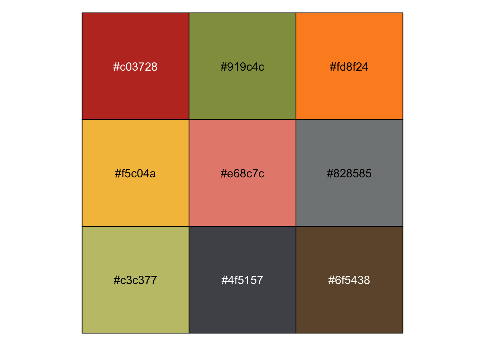
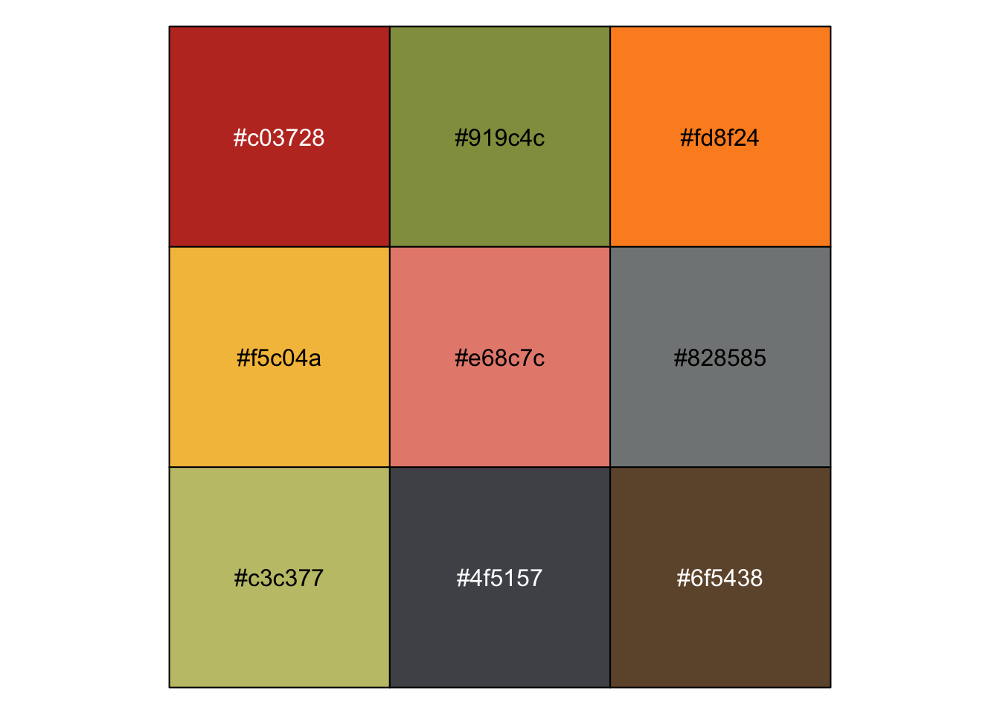
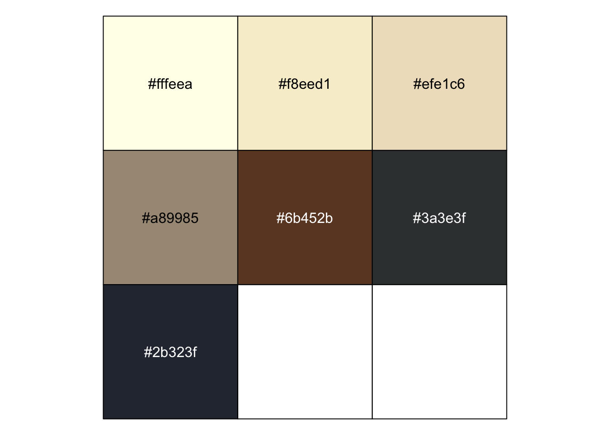
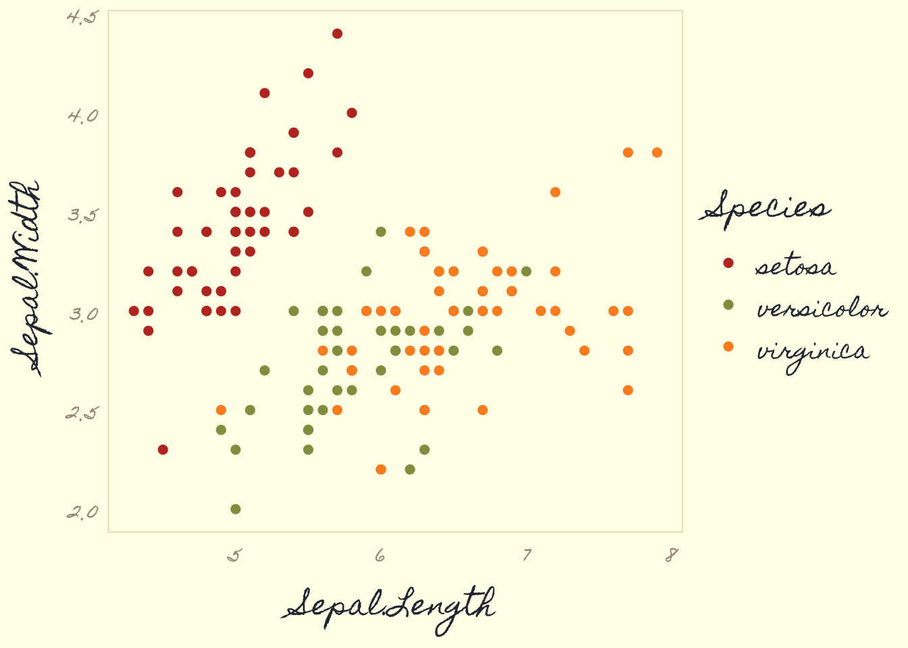
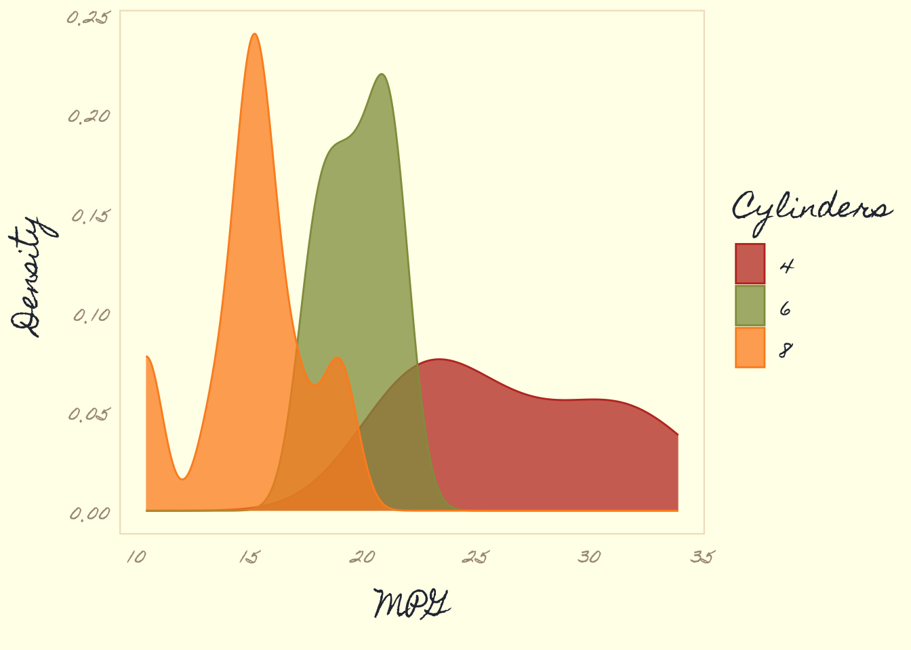
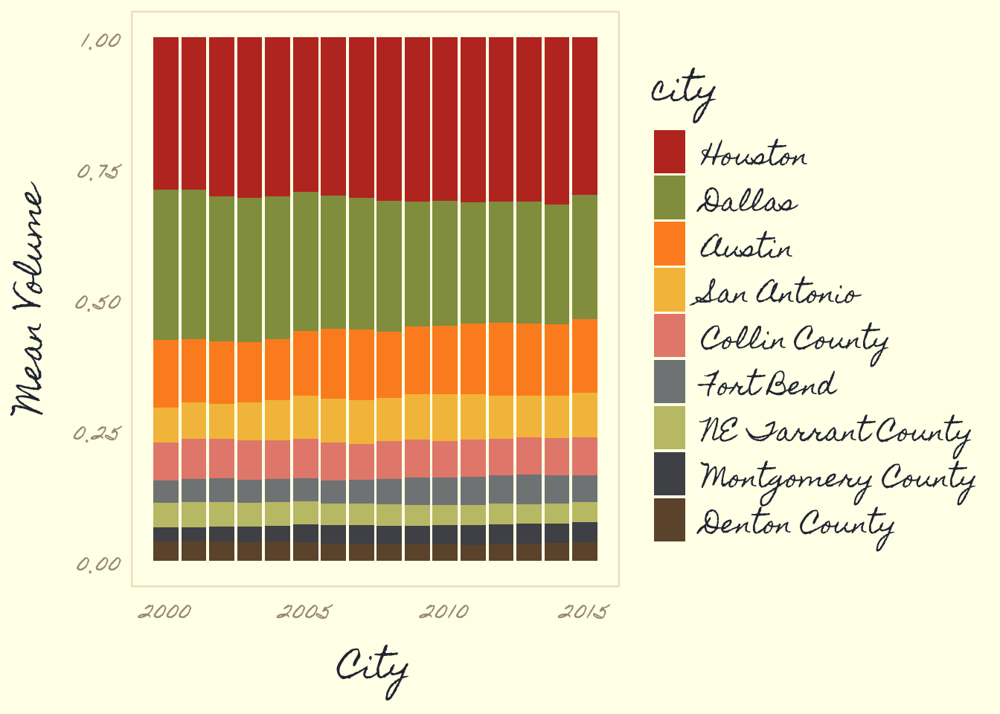

scales::show_col(ggpomological:::pomological_palette)

Aron Atkins (@aronatkins) gave a great talk at rstudio::conf 2018 about a subject near and dear to my heart: parameterized RMarkdown. And apples.
I did not know about R Markdown parameterized reports…just params in the YAML and boom! Repeated analyses without messing with the original report code. Also, @aronatkins really likes 🍎 #rstudioconf pic.twitter.com/g2OC2lTnJc
— Larie (@lariebyrd) February 3, 2018
In his talk, he designed a parameterized RMarkdown report that would provide the user with a customized report for their selected fruit and pulling in images from the USDA Pomological Watercolor Collection. I had never heard of the pomological watercolors – or the fan club twitter account @pomological – until watching his talk. It’s a treasure trove of thousands of watercolor images of fruits; beautiful images with intricate details and a very unique and stunning palette. The perfect palette for a custom ggplot2 theme.

The collection spans the years 1886 to 1942. The majority of the paintings were created between 1894 and 1916. The plant specimens represented by these artworks originated in 29 countries and 51 states and territories in the U.S. There are 7,497 watercolor paintings, 87 line drawings, and 79 wax models created by approximately 21 artists. [USDA National Agricultural Library]
I pulled together a small set of functions into a simple package called ggpomological that provides a custom, pomological-inspired ggplot2 theme.
Before reading more about ggpomological, you should really check out Aron’s talk or his slides.
ggpomological lives on GitHub for now (and probably ever), so you’ll need to use the devtools (or similar) to install:
# if you don't have devtools
install.packages("devtools")
devtools::install_github("gadenbuie/ggpomological")The first thing I did after watching Aron’s talk was to browse through the pomological watercolors collection, downloading images of a wide variety of fruits. I didn’t do this in any systematic way, other than occasionally searching for a particular type of fruit, like “grape” or “papaya”.
From these images, I used an application (that I installed forever ago and apparently is no longer around) called ColorSchemer Studio to pull out a set of colors that I felt represented the collection.
I ended up with a lot of colors.

From this list, I chose just a few that I thought worked well together for color and fill scales
scales::show_col(ggpomological:::pomological_palette)
and a few colors for the plot background and decoration
scales::show_col(unlist(ggpomological:::pomological_base))
I created three variants of the theme-generating function theme_pomological().
theme_pomological() sets the plot theme to be representative of the paper and styling of the watercolors and includes a paper-colored background,
theme_pomological_plain() has the same styling, just with a transparent (or white) background,
theme_pomological_fancy() has the paper-colored background and defaults to a fancy handwritten font (Homemade Apple).
For color and fill scales, ggpomological provides scale_color_pomological() and scale_fill_pomological().
In the future, I might revisit this package to
Increase colors in discrete scale
Setup paired color scales as there are lots of great color pairs in the extracted colors
Set up continuous scale colors.
To get the fully authentic pomological look you really need a handwritten font style, and I found a few from Google Fonts that fit the bill.
Alternatively, you can use something like calligrapher.com to create your own handwriting font!
But fonts can be painful in R, so the base functions – theme_pomological() and theme_pomological_plain() – don’t change the font by default. To opt into the full pomological effect, use theme_pomological_fancy() which is just an alias for theme_pomological(base_family = "Homemade Apple", base_size = 16).
Great, but I want my plots to look even more pomological, you say?
Perfect! ggpomological provides a function named paint_pomological that uses the magick package to add a pomological watercolor paper background and a subtle texture overlay.
We’ll need ggplot2 (loaded with ggpomological) and dplyr
library(ggpomological)
library(dplyr)# Base plot
basic_iris_plot <- ggplot(iris) +
aes(x = Sepal.Length, y = Sepal.Width, color = Species) +
geom_point(size = 2)
# Just your standard Iris plot
basic_iris_plot
# With pomological colors
basic_iris_plot <- basic_iris_plot + scale_color_pomological()
basic_iris_plot
# With pomological theme
basic_iris_plot + theme_pomological()
# With transparent background
basic_iris_plot + theme_pomological_plain()
# Or with "fancy" pomological settings
pomological_iris <- basic_iris_plot + theme_pomological_fancy()
pomological_iris
# Painted!
paint_pomological(pomological_iris, res = 110) %>%
magick::image_write(set_filename("plot-demo-painted.png"))
stacked_bar_plot <- ggplot(diamonds) +
aes(price, fill = cut) +
geom_histogram(binwidth = 850) +
xlab('Price (USD)') +
ylab('Count') +
ggtitle("ggpomological") +
scale_x_continuous(label = scales::dollar_format()) +
scale_fill_pomological()
stacked_bar_plot + theme_pomological("Homemade Apple", 16)
paint_pomological(
stacked_bar_plot + theme_pomological_fancy(),
res = 110
) %>%
magick::image_write(set_filename("plot-bar-chart-painted.png"))
density_plot <- mtcars %>%
mutate(cyl = factor(cyl)) %>%
ggplot() +
aes(mpg, fill = cyl, color = cyl)+
geom_density(alpha = 0.75) +
labs(fill = 'Cylinders', colour = 'Cylinders', x = 'MPG', y = 'Density') +
scale_color_pomological() +
scale_fill_pomological()
density_plot + theme_pomological("Homemade Apple", 16)
paint_pomological(
density_plot + theme_pomological_fancy(),
res = 110
) %>%
magick::image_write(set_filename("plot-density-demo-painted.png"))
Here I’ll use the txhousing data provided with ggplot2
Information about the housing market in Texas provided by the TAMU real estate center, http://recenter.tamu.edu/.
big_volume_cities <- txhousing %>%
group_by(city) %>%
summarize(mean_volume = mean(volume, na.rm = TRUE)) %>%
arrange(-mean_volume) %>%
top_n(length(ggpomological:::pomological_palette)) %>%
pull(city)
full_bar_stack_plot <- txhousing %>%
filter(city %in% big_volume_cities) %>%
group_by(city, year) %>%
summarize(mean_volume = mean(volume, na.rm = TRUE)) %>%
ungroup %>%
mutate(city = factor(city, big_volume_cities)) %>%
ggplot() +
aes(year, mean_volume, fill = city, group = city) +
geom_col(position = 'fill', width = 0.9) +
labs(x = 'City', y = 'Mean Volume', color = 'City') +
theme(panel.grid.minor.x = element_blank()) +
scale_fill_pomological()
full_bar_stack_plot + theme_pomological("Homemade Apple", 16)
paint_pomological(
full_bar_stack_plot + theme_pomological_fancy(),
res = 110
) %>%
magick::image_write(set_filename("plot-full-bar-stack-painted.png"))
This last one is in my own handwriting.
ridges_pomological <- ggplot(diamonds) +
aes(x = carat, y = clarity, color = clarity, fill = clarity) +
ggridges::geom_density_ridges(alpha = 0.75) +
theme_pomological(
base_family = 'gWriting',
base_size = 20,
base_theme = ggridges::theme_ridges()
) +
scale_fill_pomological() +
scale_color_pomological()
paint_pomological(ridges_pomological, res = 110) %>%
magick::image_write(set_filename("plot-ridges-painted.png"))